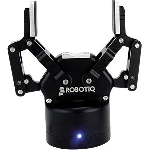
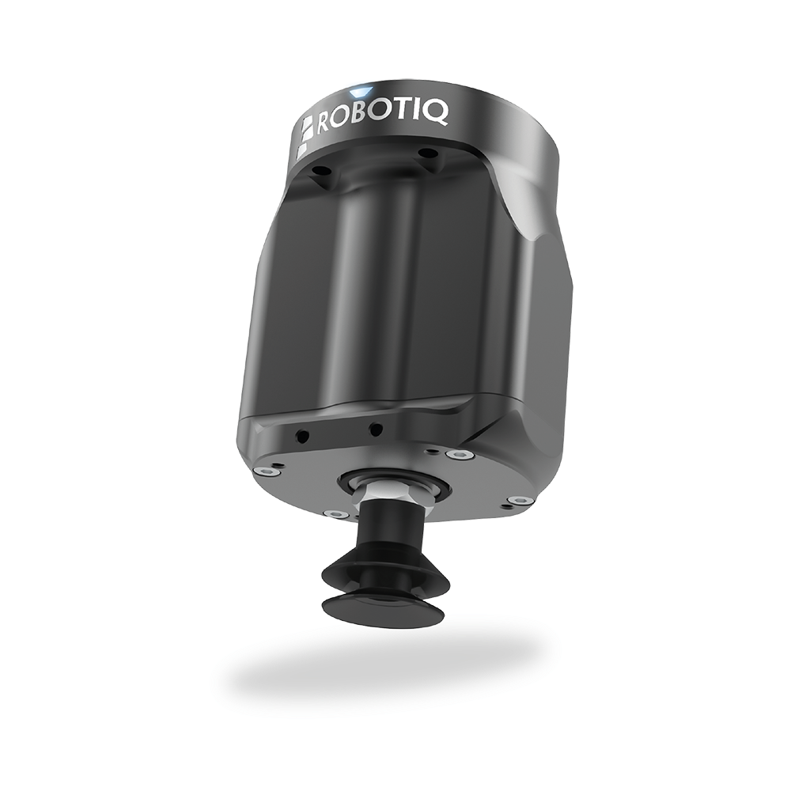

Robotiq grippers
Experimenteel en ongetest!
Robotiq heeft een groot assortiment van grippers voor verschillende doeleinden. Belangrijkste zijn de vacuum gripper en de vinger-grippers. In dit hoofdstuk wordt beschreven hoe je ze kunt gebruiken.
Let op: De gripper dient op de USB-poort van de development computer aangesloten te zijn i.p.v. de controller van de UR-robot.

